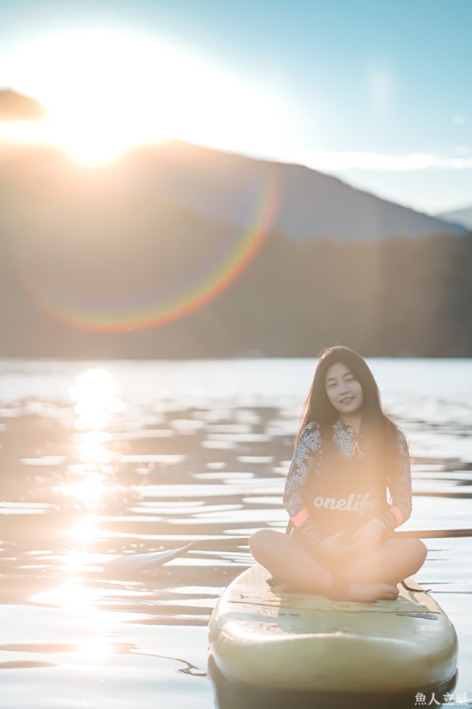
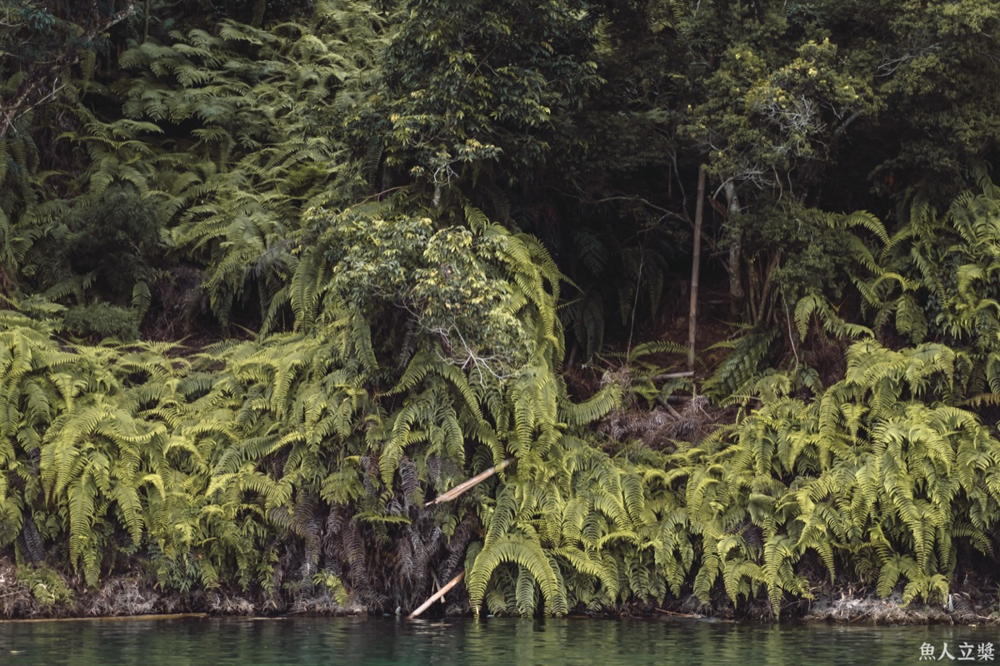

被山圍住的海
水上療癒
用一天的湖水顏色
換回自己的節奏
往下
魚人立槳 ONELIFE SUP。十二年來，我們帶過親子、情侶、公司團體下水。
山裡海是我們開的新路線，給另一種人。
這幾年愈來愈清楚——來的人缺的不是更多內容、更多行程、更多要認識的人。
缺的是相反的東西。少一點。
日月潭給得起別的地方給不起的條件：一片夠大、夠安靜、清晨沒有人的水。我們把它拿來做減法，而不是再塞一個行程進去。
第一天沉澱
第二天獨處
標記的兩段全程靜默。那不是規定你不能講話，是因為我們更在意你心裡那一場對話。上岸之後想跟誰聊都歡迎。
日月潭一天只有五種光。第二天早上，你會在光卡上記下今天輪到哪一種，帶回家。
04:50
玄
黑暗
05:40
霞
希望
09:20
澄
平靜
14:30
蒼
滋養
17:45
昏
感恩

年滿 18 歲，會不會游泳都可以。第一天有一小時在岸上和淺水，你決定什麼時候上板。
來的人不會問你做什麼工作，也不會問你為什麼想來——因為答案都一樣：為了自己。
有些理解不需要對話。

第一梯採邀請與小班制。我們想把課帶好，而不是帶多。
主課程
18,800／人
完訓後開放
32,000／人
可以，而且我們特別歡迎。全程穿救生衣，立槳板本身就是浮具，我們不會離岸太遠。第一天有一小時在岸上和淺水，你決定什麼時候上板。
下雨仍可下水，那是另一種水色；風大則調整路線或改為岸上課程。若因天候需全面取消，我們會擇期或全額退費。
不一樣。那類課程通常有明確的方法和紀律，時間也長得多。我們只有兩段靜默，站不站、寫不寫都由你決定。我們不教方法，只把干擾拿掉。